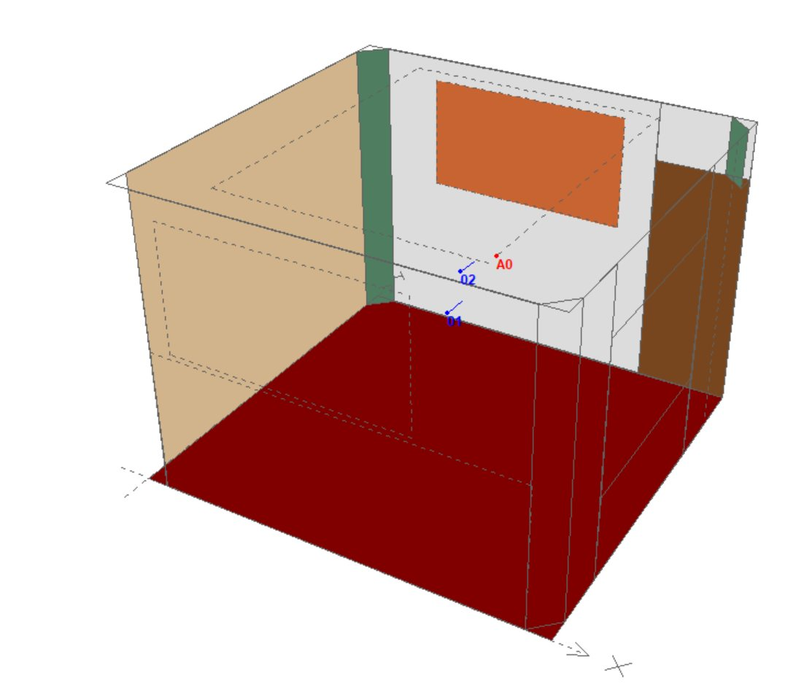
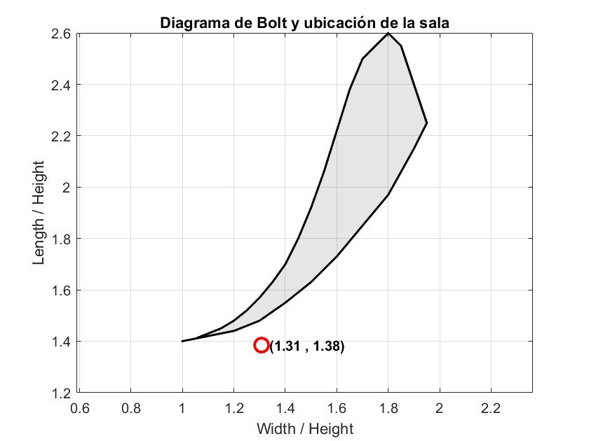
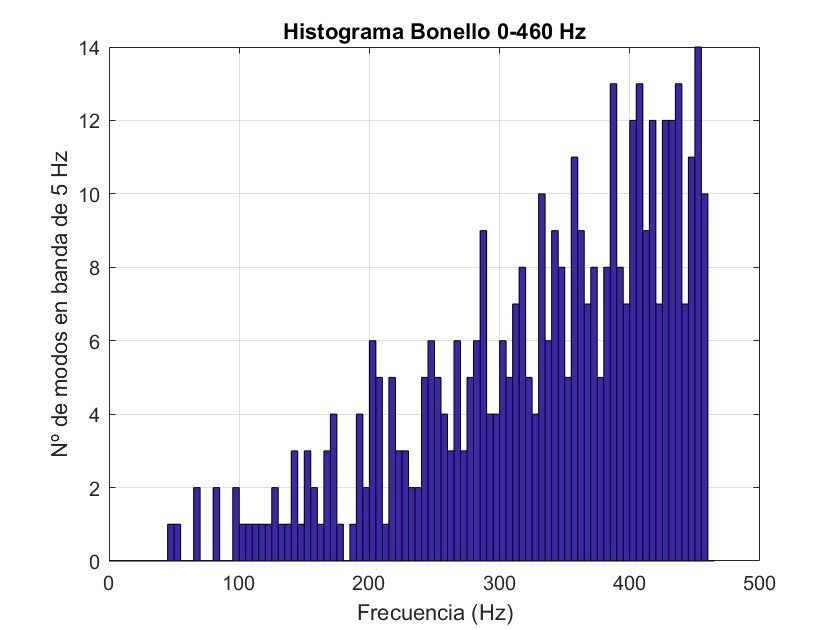
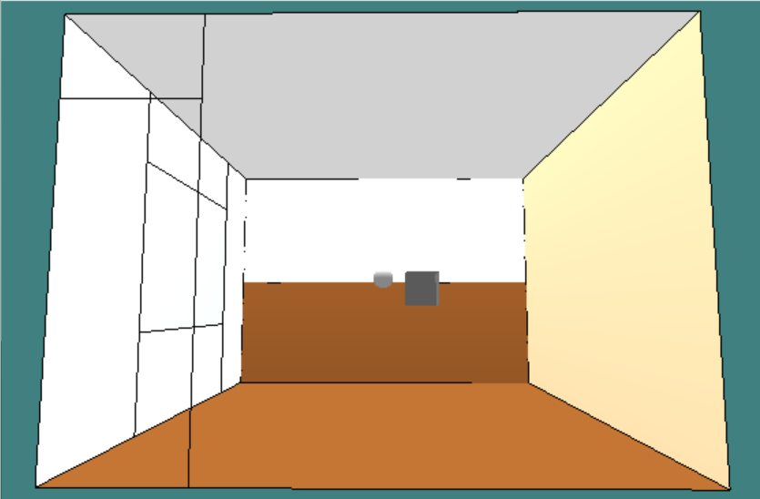
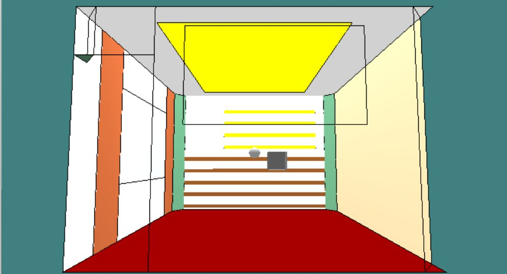
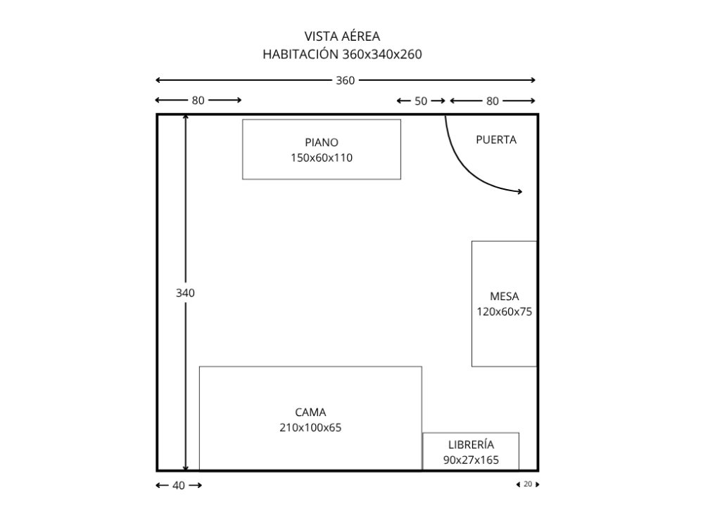

A 32 m³ domestic room was far too reverberant for practising piano. I designed a passive acoustic treatment and validated it by simulation, combining wave-based analysis in MATLAB with a geometrical model in CATT-Acoustic.
Mid-frequency reverberation time (500 Hz–2 kHz, room centre), −72 %
Schroeder frequency: most of the piano's range now sits in the diffuse field
Definition D50 at the pianist's head
Estimated budget incl. VAT, with a low-cost version using household items
The same piano phrase at the pianist's position, before and after the treatment. Switch while it plays.
Best with headphones. Both versions share the same gain, so the level drop after treatment is real.
Approximate auralization: impulse responses synthesized per octave band from the simulated reverberation time, D50 and sound strength G at the pianist's head (CATT-Acoustic results), convolved with close-miked piano samples. To be replaced with the impulse responses exported from the CATT-Acoustic model.
The room is a typical bedroom with an upright piano, painted walls, a window and little furniture. Its average absorption was very low (ᾱ ≈ 0.05), so the simulated reverberation time reached 1.2–1.5 s in most bands (1.65 s at mid frequencies by Sabine's formula in MATLAB), against the 0.4–0.6 s recommended for individual practice. Note tails overlapped and fast passages blurred.
Being small, the room also behaves modally up to about 460 Hz: almost three octaves of the piano fall where individual room modes create audible peaks and dips. Its proportions sit just outside the Bolt area, which suggests modes bunching between 90 and 140 Hz.



I diagnosed the untreated room twice, analytically in MATLAB (Sabine reverberation time, room modes, Schroeder frequency) and geometrically in CATT-Acoustic, and then tested each element in the model.
Damps the reflection path between floor and ceiling, the two largest parallel surfaces.
Three corners plus two units above the door, where modal pressure is highest.
On the west window, 13 m² with 2:1 pleating, absorbing mid and high frequencies.
1.8 × 1.0 m, tuned with Maa's model to absorb around 500 Hz.
On the north wall and the central ceiling, to scatter reflections instead of absorbing them all.


Values per octave band from the CATT-Acoustic simulation. The sound strength G drops 3–6 dB, the price of the added absorption.
Seconds · shaded: 0.4–0.6 s recommended for practice
Percent of energy in the first 50 ms
Decibels
| Octave band | RT before (s) | RT after (s) | D50 before (%) | D50 after (%) | C80 before (dB) | C80 after (dB) | G before (dB) | G after (dB) |
|---|
Simulation only. All results come from MATLAB and CATT-Acoustic. I did not measure the room or study sound insulation to neighbours.
Sabine or Eyring. After treatment the mean absorption rises to 0.25–0.30, where Sabine's assumption no longer holds, so I used Eyring's reverberation times to recompute the Schroeder frequency.
A deliberately dry result. C80 ends at 10–15 dB, above the usual guidelines, and at the pianist's position the reverberation time drops slightly below 0.4 s above 1 kHz. I accepted it, because lowering C80 would mean removing absorption.
Cost and reuse. I priced the treatment at about €2,213 with VAT and proposed household alternatives (bookshelves, mattresses, blankets) that could cut it by up to 40 %, favouring removable, single-material products.
Measure it. Record impulse responses in the real room, before and after, and compare them with the model.
Listen in real time. Move from offline auralization to interactive, binaural listening, so a musician can try treatment options while playing.
Design by ear. Use perceptual tests with pianists to decide how dry a practice room should be, instead of relying only on standard ranges.

Bachelor's thesis in Telecommunication Systems, Sound and Image Engineering, Universitat Politècnica de València, Campus de Gandia, September 2025. Supervisor: Prof. Jesús Alba Fernández.
Piano samples: Salamander Grand Piano V3 by Alexander Holm, licensed under CC BY 3.0, pitch-shifted and convolved. Music: J. S. Bach, BWV 846 (public domain).